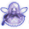

- Welcome to Touhou Wiki!
- Please register to edit. For assistance, check in with our Discord server or IRC channel.
Zombie Fairy
| ゾンビフェアリー Zombie Fairy zõ̞mbiɸe̞a̠ɾiː | |
|---|---|
|
 Sprite of a Zombie Fairy in Double Spoiler
| |
| Species | |
| Location | |
Appearances | |
| Official Games | |
| |
| Print Works | |
| |
A Zombie Fairy (ゾンビフェアリー Zonbifearī) are a sub-group of fairies that are stage enemies in Subterranean Animism and Double Spoiler, supporting Rin Kaenbyou during her boss battles. They're neither dead nor undead, as both Marisa Kirisame and Aya Shameimaru know that these fairies are not real zombies and are pretending.
Background Information[edit]
Name[edit]
They are originally unnamed, but a popular fan name for them is Zombie Fairy (ゾンビフェアリー). This is derived from Rin Kaenbyou's spell card Cursed Sprite "Zombie Fairy".
Design[edit]
The zombie fairy simply has a livid appearance on both their dress and hair. If they're "killed", they are shown to have a halo.
Zombie Fairy's Appearances[edit]
- Subterranean Animism
The zombie fairies' first début was in Subterranean Animism. As Rin first released a few fairies before the spell card Cursed Sprite "Zombie Fairy", they'll play dead if the player defeats them. Once the spell card occurs, they'll turn into zombie fairies and start moving towards the player. They can be defeated and unharmed, but will immediately start chasing the player again as soon as they've been resurrected. On hard and lunatic modes, they appear in the spell card Cursed Sprite "Vengeful Spirit: Possessed Fairy" , and thus there are more zombie fairies and are thus harder to deal with. They also appear on her last spell card "Rekindling of Dead Ashes", doing the same actions.
- Double Spoiler
Zombie fairies make a return in Double Spoiler, where they appear in the spell card Death Sign "Ghost Town" and "Corpse Shopping District". Each time Aya Shameimaru takes a photo of a zombie fairy, they'll play dead and move to another part of the screen, waiting to be resurrected. On the former spell card, they'll shoot danmaku directly at Aya while moving towards her at a speed. On the latter spell card, they'll move randomly around the screen, not shooting danmaku. The more times Aya takes successful photos, the more zombie fairies will appear on the screen, filling it up. They've got some sort of vengeful spirit when they're first placed on the screen, and the sprite of the zombie fairy looks like it's been modifies from Subterranean Animism.
Additional Information[edit]
- According to Marisa in her book, the Cursed Sprite "Zombie Fairy" spell card cannot begin without fairies to play along in the first place.
- Nue Houjuu uses a fairy in the appearance of a ghost on stage 4 of Undefined Fantastic Object. It's unknown if its related to the zombie fairies.
Fandom[edit]
Official Sources[edit]
- 2008/08/16 Subterranean Animism - Stage 5
- 2010/03/14 Double Spoiler - Level 8-1, 8-5